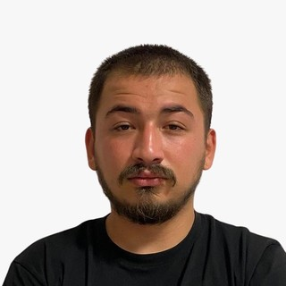

İnsanlar
Takım
Sekiz öğrenci, üç alt takım, tek uçak. Muninn UAV, Konya Teknik Üniversitesi'ndeki Yazgit Topluluğu'nun havacılık takımıdır. Bu sayfa kim olduğumuzu, nasıl örgütlendiğimizi ve bize nasıl ulaşacağınızı anlatır.
Hikâyemiz
Yazgit Topluluğu'nun havacılık takımı
Muninn UAV, Konya Teknik Üniversitesi'ndeki Yazgit Topluluğu'nun havacılık takımıdır; adını İskandinav mitolojisinde her gün uçup gördüklerini geri getiren kuzgundan alır. Takım, otonom uçuş ve SUAS görevinin merkezindeki algı problemi üzerine çalışıyor: yerdeki küçük nesneleri havadan bulmak.
Üç alt takım — aviyonik, yazılım/AI ve mekanik — kendi alt sistemlerine uçtan uca sahiptir. Her alt sistem uçmadan önce kademeli test programından geçmek zorundadır ve her büyük tercihin gerekçesi tasarım kararı günlüğünde yayımlanır.
Kadro
Üyeler — SUAS 2026 sezonu
 Mustafa Akgün
Takım kaptanı / Pilot
Sistem entegrasyonu ve uçuş operasyonu
Mustafa Akgün
Takım kaptanı / Pilot
Sistem entegrasyonu ve uçuş operasyonu
 Mert Hüseyin Çağlayan
Aviyonik
Otopilot entegrasyonu, tesisat ve telsizler
Mert Hüseyin Çağlayan
Aviyonik
Otopilot entegrasyonu, tesisat ve telsizler
 Enes Kara
Aviyonik
Güç sistemi ve araç üstü elektronik
Enes Kara
Aviyonik
Güç sistemi ve araç üstü elektronik
 Beyza Akbaş
Yazılım / AI
Tespit modeli ve ROS 2 otonomi
Beyza Akbaş
Yazılım / AI
Tespit modeli ve ROS 2 otonomi
 Yusuf Karagülle
Yazılım / AI
Görev mantığı, PX4 ve simülasyon
Yusuf Karagülle
Yazılım / AI
Görev mantığı, PX4 ve simülasyon
 Betül Soyer
Yazılım / AI
Algı hattı ve yer istasyonu
Betül Soyer
Yazılım / AI
Algı hattı ve yer istasyonu
 Sena Altınordu
Mekanik
Gövde yapısı ve imalat
Sena Altınordu
Mekanik
Gövde yapısı ve imalat

Battal Berkay Aktaş Mekanik Merkez kapsül ve yapısal tasarımRehberlik
Akademik danışman
 Prof. Dr. Murat Ceylan
Akademik danışman
Konya Teknik Üniversitesi · Yazgit Topluluğu kurucusu
Prof. Dr. Murat Ceylan
Akademik danışman
Konya Teknik Üniversitesi · Yazgit Topluluğu kurucusu
Bize ulaşın
İletişim
- E-posta muninnuav@gmail.com
- Üniversite Konya Teknik Üniversitesi
- Merkez Konya, Türkiye
- Instagram @muninnteam
- LinkedIn Yazgit Muninn İHA
Katılım. Her dönem başında yeni üye alıyoruz. Yaptığın bir şeyi — donanım ya da yazılım — kısaca anlatan bir not gönder: muninnuav@gmail.com.